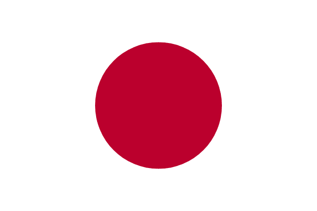

Información General
Director Técnico: Hajime Moriyasu
Capitán: Wataru Endo
📖 Historia Mundialista
Japón es una de las selecciones más fuertes de Asia. Ha participado regularmente en los mundiales desde 1998 y destaca por su disciplina táctica, velocidad y excelente formación de jugadores.
💡 Curiosidades
Conocida como los "Samurai Blue". Ha participado en todos los Mundiales desde 1998. Fue coanfitrión del Mundial 2002 junto a Corea del Sur.
🏆 Participaciones Mundialistas
- 1998 — Francia
- 2002 — Corea/Japón
- 2006 — Alemania
- 2010 — Sudáfrica
- 2014 — Brasil
- 2018 — Rusia
- 2022 — Qatar
📊 Estadísticas Principales
| Mejor resultado | Octavos de final |
| Títulos Mundiales | 0 |
| Goleador histórico | Kunishige Kamamoto (75 goles) |
| Más partidos | Yasuhito Endo (152 partidos) |
⚽ Partidos Mundial 2026
-
vs Países Bajos
📅 14 de Junio de 2026
🕒 18:00
🏟️ MetLife Stadium -
vs Túnez
📅 20 de Junio de 2026
🕒 16:00
🏟️ NRG Stadium -
vs Suecia
📅 26 de Junio de 2026
🕒 20:00
🏟️ Lumen Field
⬅ Volver al Grupo F